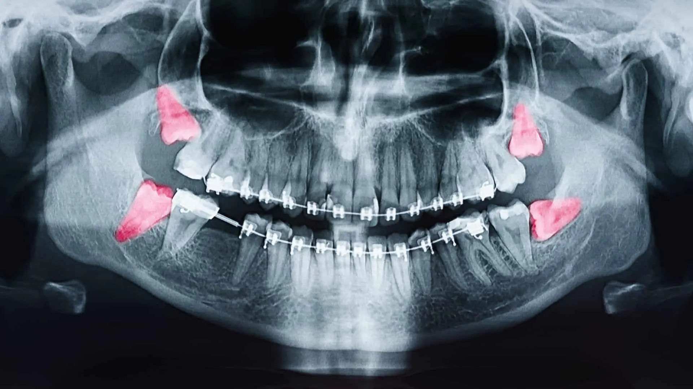
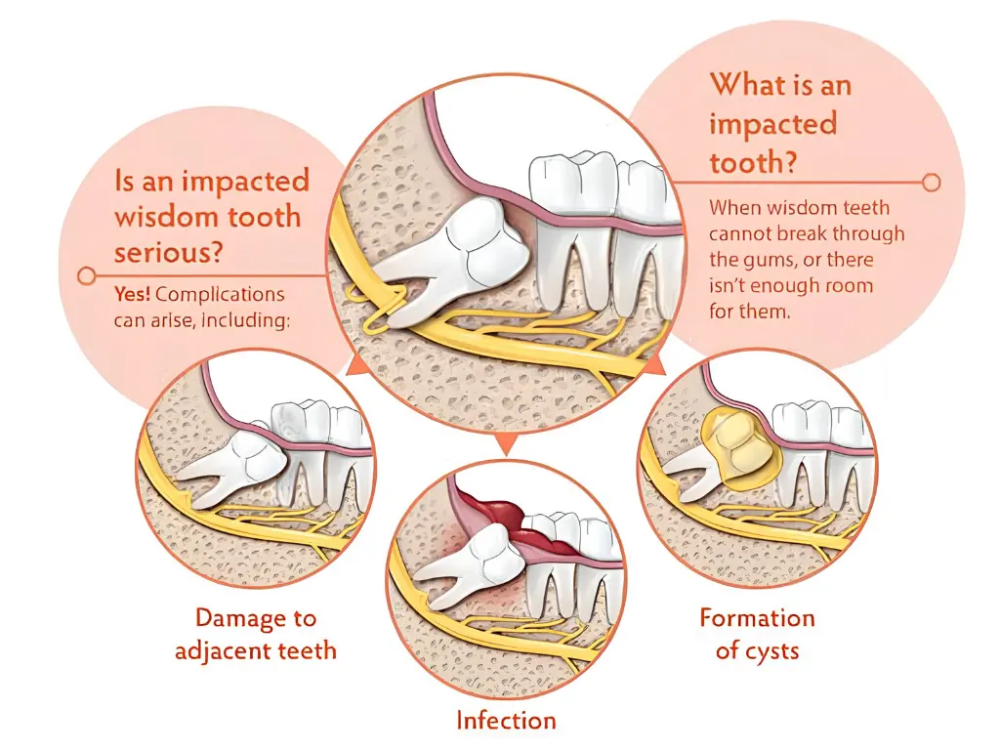
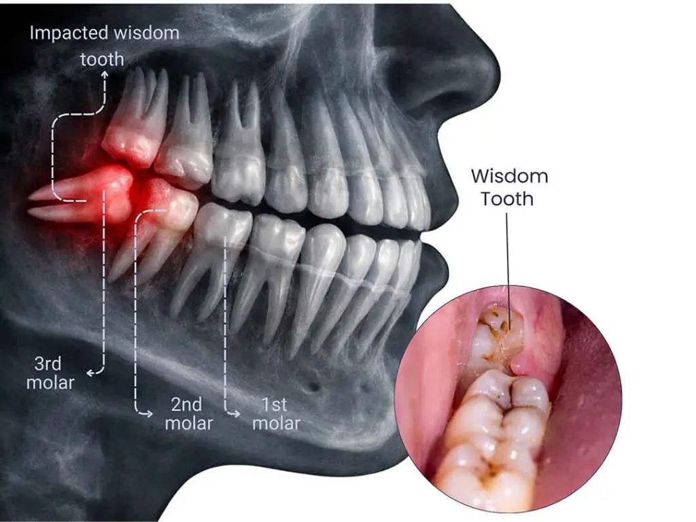

Don't let impacted teeth cause pain or damage to your smile. Our oral surgery specialists provide safe, painless, and precise extractions in Hyderabad.
Human teeth are designed to erupt through the gums and take their place in the dental arch. However, in many cases, a tooth becomes "impacted," meaning it is blocked from erupting by other teeth, bone, or dense gum tissue. This is most common with the third molars, popularly known as Wisdom Teeth, but can also affect canines and other teeth. An impacted tooth is not just a source of potential pain; it is a clinical ticking time bomb that can lead to infection, cysts, and damage to the healthy teeth surrounding it. At Vijaya Dental & Implant Center in Dammaiguda, Hyderabad, we specialize in the surgical management of impacted teeth using advanced 3D imaging and minimally invasive techniques. This 2500+ word guide provides essential medical information on the types of impaction, the necessity of extraction, and what to expect during your recovery.
An impacted tooth is a tooth that fails to fully erupt into its functional position. This often happens because the jaw is not large enough to accommodate the tooth. Instead of growing straight up, the tooth may grow at an angle toward the next tooth (mesial impaction), away from the next tooth (distal impaction), or even horizontally within the jawbone.
There are two main degrees of impaction: Partial Impaction, where a portion of the tooth has broken through the gum, and Full Impaction, where the tooth remains completely buried under the bone and gum. Both conditions require evaluation, as partial impactions are particularly prone to "pericoronitis"—a painful infection caused by food and bacteria getting trapped under the gum flap.

Visualizing the angle: The position of the tooth determines the complexity of the extraction.
Wisdom teeth are the last to erupt, usually between the ages of 17 and 25. By the time they arrive, the other 28 teeth have already claimed their space. Evolution has also resulted in smaller human jaws over time, leaving less room for these "spare" molars. This is why wisdom tooth extraction is one of the most common surgical procedures in dentistry today.
While some impacted teeth cause no immediate symptoms, many patients experience:

One of the risks of lower wisdom tooth extraction is the proximity of the tooth roots to the Inferior Alveolar Nerve, which provides sensation to the lip and chin. Traditional 2D X-rays can be misleading about this distance. At Vijaya Dental, we use 3D CBCT scans to see the exact relationship between the tooth and the nerve in three dimensions. This allows our surgeons to plan the extraction with 100% precision, virtually eliminating the risk of nerve injury.
In Hyderabad, our center is recognized for this high-tech approach to surgical safety.
We ensure a smooth and painless experience through expert technique and anesthesia.
We use advanced local anesthetics to ensure you feel no pain during the procedure. For more complex cases or anxious patients, we also offer sedation options.
For a fully impacted tooth, a small incision is made in the gum. If the tooth is covered by bone, a tiny amount of bone is removed to gain access to the tooth.
Instead of pulling the tooth in one piece, our surgeons often "section" or divide the tooth into smaller parts. This is a much gentler technique that requires smaller incisions and results in much faster healing for the patient.
The socket is meticulously cleaned, and dissolvable sutures are placed to close the gum. We may also place a specialized collagen plug to promote healthy blood clot formation.

Biological recovery: Our techniques are designed to support your body's natural healing process.
The 24 hours following surgery are the most important. We provide a detailed recovery kit and instructions to prevent complications like "Dry Socket" (where the blood clot is lost prematurely).
Key recovery tips include biting on gauze for an hour after surgery, avoiding straws (to prevent suction), and sticking to a soft, cold diet (like smoothies and yogurt) for the first day. Most patients are back to their normal routine within 3 to 5 days.
After wisdom teeth, the upper canines are the most likely teeth to be impacted. Because these teeth are vital for the aesthetics of the smile and the function of the bite, we often perform an "Exposure and Bond" procedure. We surgically expose the impacted canine and attach an orthodontic bracket to gently "pull" the tooth into its correct place over several months. This is a highly collaborative effort between our oral surgeons and orthodontists.
Oral surgery requires a steady hand and years of specialized experience. Our surgical team at Vijaya Dental handles hundreds of impaction cases every year. We combine this high-volume expertise with a commitment to the latest technology and patient comfort. Whether it's a simple extraction or a complex impaction near the nerve, you are in the safest hands in Dammaiguda.
During the procedure, you will feel no pain due to the anesthesia. Afterward, you will experience some swelling and discomfort for a few days, but we will provide medications to keep you comfortable.
Not always, but often yes. Even "silent" impacted teeth can cause damage to the roots of neighboring teeth or develop cysts. A clinical evaluation and X-ray are needed to make the right decision.
Dry socket is a painful condition that occurs if the blood clot in the extraction site is dislodged before the wound heals. Following our post-op instructions carefully is the best way to prevent it.
Most patients can return to a normal diet within 7 to 10 days, once the initial healing of the gum tissue is complete.
The cost varies based on whether the tooth is partially or fully impacted. We offer transparent, affordable pricing for all surgical procedures at our Dammaiguda clinic.
If you have only had local anesthesia, yes. If you chose sedation, you will need someone to drive you home and stay with you for a few hours.
Don't ignore the pain or pressure. Trust the oral surgery experts at Vijaya Dental for a safe and comfortable experience.
📅 Book Your Appointment 📞 Call 91776 17437"I’m Dixit Reddy, and I recently visited Vijaya Dental & Implant Center with my mom for her Root Canal Treatment. Honestly, we had a really good experience. My mom was quite nervous, but the doctor explained everything clearly. The procedure was smooth and almost painless. Thank you, Dr. Praveen sir!"
"Visited Vijaya Dental & Implant Center for teeth cleaning and consultation. The doctor is very knowledgeable and explains everything in detail. The clinic is well-maintained and uses modern technology. I felt very comfortable throughout the treatment. Highly recommend!"
"I’m Vanadana, and I visited Vijaya Dental & Implant Center for braces to improve my smile. Dr. Praveen sir explained everything clearly and made me feel comfortable. The treatment process was smooth, the clinic is clean, and the staff are very friendly. Highly recommended 👍"
"Excellent experience at Vijaya Dental! I went for a wisdom tooth consultation and the doctor was very patient in explaining the process. The treatment was painless and the costs were very reasonable. Definitely the best dentist in Dammaiguda!"
Beside RR hospital,
P S Rao Nagar, Dammaiguda,
Hyderabad, Telangana 500083
Plus Code: GH2R+3V Secunderabad
Monday – Sunday
10:00 AM – 10:00 PM
Telugu · Hindi · English